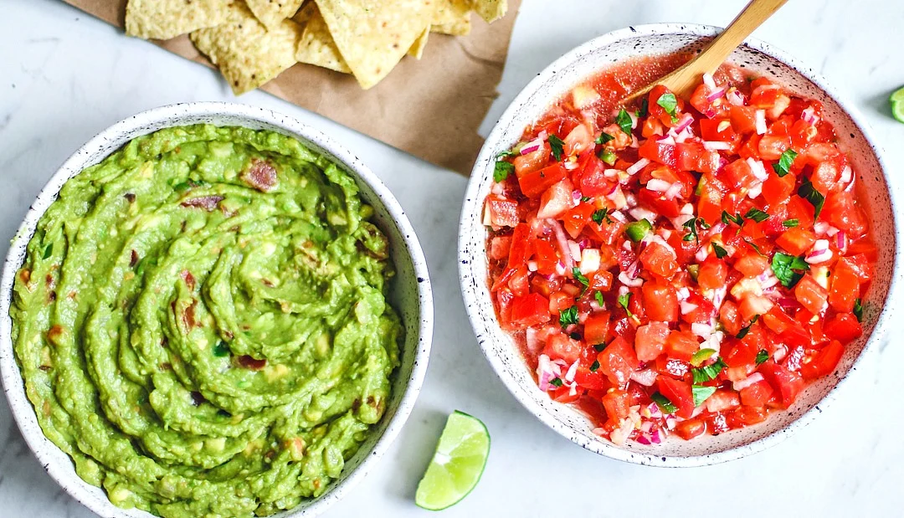

snack
Salsa & Guacamole
Mexican Avocado and Tomato Dips
A fresh and flavourful homemade salsa and guacamole combination that's perfect for sharing with tortilla chips.
What You'll Need
Ingredients
Salsa
- 5 tomatos, diced
- ⅓ cup red onion, diced
- 1 jalapeño, minced
- 3 garlic cloves, minced
- 1 lime, zested and juiced
- ¼ cup extra virgin olive oil
- ½ tsp salt
- ¼ cup freshly chopped cilantro
Guacamole
- 4 large avocados, peeled and pitted
- 1 lime, zested and juiced
- ¼ tsp salt
- ⅓ cup homemade salsa
- Extra salsa juice, as needed
Time To Cook
Method
Salsa
Combine the tomatos, red onion, jalapeño, garlic, lime zest and juice, olive oil, salt and cilantro in a large bowl.
Toss everything together until well combined.
Let the salsa stand for 15 minutes before serving, or cover and refrigerate until needed.
Guacamole
Peel and pit the avocados and place them into a large bowl.
Mash fully with a fork.
Add the lime juice, salt, ⅓ cup of the homemade salsa and some of the salsa juice.
Mash and mix until the guacamole reaches your preferred consistency.
Serve the salsa and guacamole with your favourite tortilla chips.
Recipe & Image Source
Credits
This Salsa & Guacamole recipe was originally published by Killing Thyme.
Recipe by Dana Sandonato.
The image used on this page is also sourced from Killing Thyme.